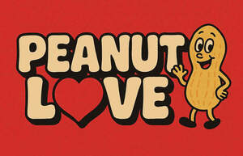

Trade Mark Journal No.2026/009 27 February 2026
UK00004338690 10 February 2026 (16,28)

- Class 16
- Holiday cards; Gift cards; Anniversary cards; Greetings cards; Paper gift tags; Gift wrap cards; Gift paper; Greeting cards; Pencil ornaments [stationery]; Pencil ornaments (stationery); Paper gift boxes; Paper gift wrapping ribbons; Paper cake decorations; Pop-up greetings cards; Paper gift bags; Paper gift wrap bows; Paper bows for gift wrap; Gift tags; Gift wrapping paper; Envelopes [stationery]; Stickers [stationery]; Party ornaments of paper; Gift cartons; Paper party decorations; Announcement cards [stationery]; Musical greetings cards; Paper wine gift bags; Paper boxes for storing greeting cards; Gift boxes; Giftwrapping paper; Cardboard gift boxes; Occasion cards; Stencils [stationery]; Gift bags; Treated paper for wrapping flowers and floral displays; Musical greeting cards; Postcards; Gift boxes made of cardboard; Gift wrap paper; Paper gift wrap; Gift books; Metallic gift wrapping paper; Gift packaging; Paper cake toppers; Postcards and picture postcards; Glitter for stationery purposes; Decorative paper garlands for parties; Envelopes for stationery use; 3D wall art made of card; Metallic paper party decorations; Post cards; Party stationery; Gift wrapping foil; Wrappers [stationery]; Stationery; Notelets; Gift vouchers; Dinner mats of card; Stationery boxes; Invitation cards; Gift wrap; Metallic gift wrap; Gift wraps; Stencils for decorating food and beverages; Decorations of paper for foodstuffs; Decorative pencil-top ornaments; Decorations of cardboard for foodstuffs.
- Class 28
- Plush toys with attached comfort blanket; Plush dolls; Plush toys; Stuffed and plush toys; Stuffed plush toys; Plush stuffed toys; Soft sculpture plush toys; Smart plush toys; Billiard table cushions; Stuffed bean-filled toys; Soft toys; Inflatable thin rubber toys; Cuddly toys; Stuffed toys; Stuffed toy animals; Stuffed toy bears.
Declan Crinion